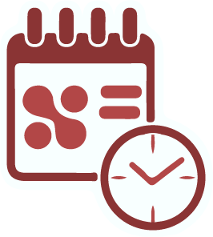

<mat-toolbar class="h-[70px] flex items-center justify-between px-[15px]" color="primary">
    <div class="flex items-center px-4 text-whiteColor gap-2">
        
        <a class="text-lg">Timesheet</a>
    </div>
    <ul class="flex items-center">
        <li class="mx-1">
            <a class="text-whiteColor"
                href="https://docs.google.com/document/d/13kP2JNm9BhWx0-BW7Hb0RJmukF4r6G9JjZb6tIpcEUU/edit#heading=h.kmmfezi3wdzw"
                target="_blank"><mat-icon>arrow_upward</mat-icon></a>
        </li>
        <li class="mx-1">
            <a class="text-whiteColor"
                href="https://docs.google.com/document/d/1M4EM-uPJLOxYx-BW8xyQsNjZFTQpgFA42GdtYjNok64/edit#heading=h.ovxn7psiq81i"
                target="_blank"><mat-icon>note_add</mat-icon></a>
        </li>
        <div class="relative inline-flex mx-1">
            <svg class="w-2 h-2 absolute top-0 right-0 m-4 pointer-events-none" xmlns="http://www.w3.org/2000/svg"
                viewBox="0 0 412 232">
                <path
                    d="M206 171.144L42.678 7.822c-9.763-9.763-25.592-9.763-35.355 0-9.763 9.762-9.763 25.591 0 35.354l189.21 189.209c9.372 9.373 24.749 9.373 34.121 0l189.21-189.209c9.763-9.763 9.763-25.592 0-35.354-9.763-9.763-25.592-9.763-35.355 0L206 171.144z"
                    fill="#648299" fill-rule="nonzero" />
            </svg>
            <select class="border-none rounded-md h-10 pl-5 pr-10 bg-white focus:outline-none appearance-none">
                <option value="english">English</option>
            </select>
        </div>
        <li class="cursor-pointer mx-1">
            <mat-icon class="text-whiteColor" [matMenuTriggerFor]="menu">more_vert</mat-icon>
            <mat-menu #menu="matMenu">
                <button mat-menu-item (click)="setTheme('primary-theme')">Red</button>
                <button mat-menu-item (click)="setTheme('accent-theme')">Pink</button>
                <button mat-menu-item (click)="setTheme('tertiary-theme')">Blue</button>
            </mat-menu>
        </li>
    </ul>
</mat-toolbar>